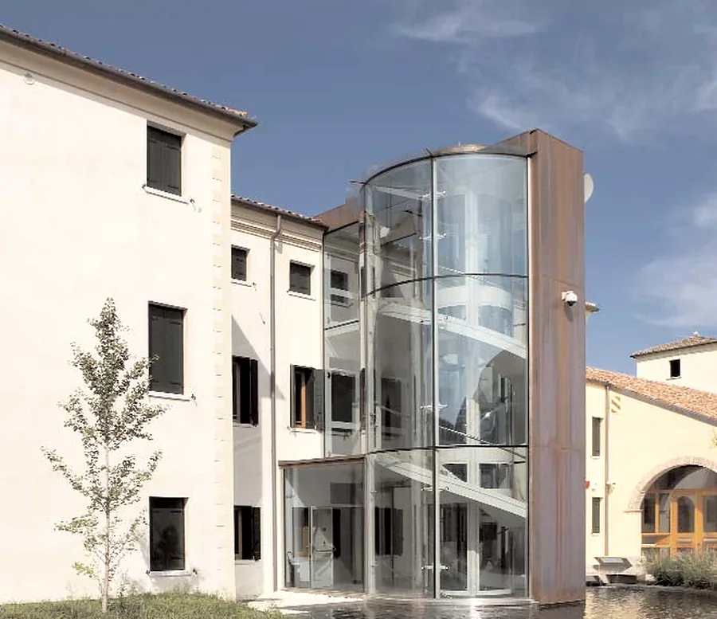
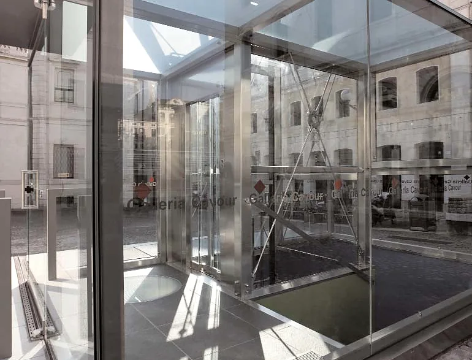
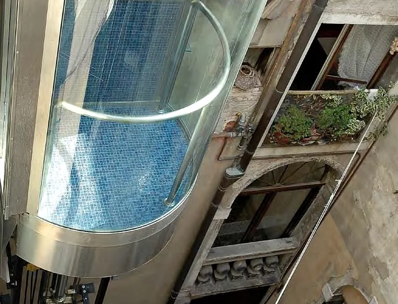
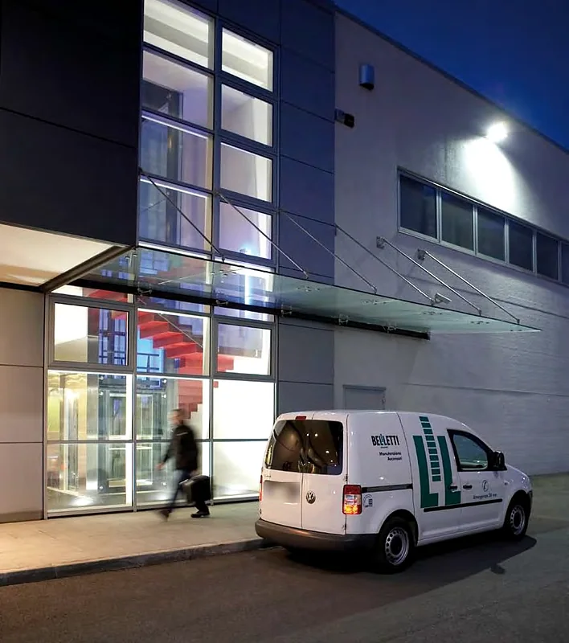

Ascensori dal 1908
Progettiamo, costruiamo, installiamo e manteniamo ascensori, montacarichi e piattaforme elevatrici, anche dentro gli edifici storici. Da Mestrino, Padova.
Guasti, 24 ore su 24: 049 900 5131
Cà della Nave, Martellago (Venezia). Il vano scala in vetro curvo nelle ex scuderie di Villa Grimani Morosini; progetto arch. Gianni e Carlotta Rigo, ing. Andrea Viel.

- Il muro
- Ala ovest, seconda metà del ’600
- Il vetro
- Ascensore tondo, 480 kg, 5 persone, 4 fermate
Un secolo e tre generazioni
Rodolfo Belletti installava ascensori in tutta Europa, fino in Romania e in Russia nel primo dopoguerra. Dopo di lui il figlio Paolo con Elvira; oggi l’azienda è guidata da Gaetano e Irma Belletti con l’amministratore delegato, l’ingegner Andrea Viel.
Trenta addettialle dirette dipendenze, con oltre venti tecnici.
Veneto e FriuliAssistenza diretta nelle province del Veneto e in parte del Friuli.
Per chiCondomini e amministratori, progettisti, enti pubblici, negozi, case private.
Pensiamo che per presentarci bastino i lavori che abbiamo eseguito
L’ascensore rispecchia il carattere dell’edificio.

Il volume in acciaio e vetro che porta dalla piazza alla galleria sotterranea, inaugurato nell’ottobre 2007. Cabina con pareti in vetro stratificato e porte a quattro ante tutto vetro.
- Portata
- 480kg
- Persone
- 6
- Corsa
- 3,82m
- Fermate
- 2
- Velocità
- 0,40m/s
Oleodinamico in taglia laterale, vano in acciaio inox. Progetto degli architetti Antonio e Tina Zambusi, ing. Ziffer, ing. Andrea Viel.

Un palazzo gotico senza spazio all’interno: l’ascensore sta nel piccolo cortile, la corsa parte dal primo piano e la fossa è sospesa su un pilone in acciaio. Parete in vetro semicircolare e mosaico Bisazza.
- Portata
- 450kg
- Persone
- 6
- Corsa
- 10,00m
- Piani serviti
- 2
- Velocità
- 0,40m/s
Oleodinamico, con il motore a circa 25 metri dal vano, in alto, al riparo dall’acqua alta. Progetto dell’arch. Edoardo Danzi.
Dal montaoggetti da 12 kg all’ascensore per 100 persone
Ascensori
Gearless senza locale macchine od oleodinamici, fino a 3 m/s.
Panoramici e strutture in vetro
Strutture metalliche antisismiche, per l’interno o l’esterno.
Montacarichi e montaoggetti
Montaoggetti da 12 kg, anche per uso alimentare.
Montauto
Per i centri storici, dove non c’è spazio per una rampa.
Piattaforme elevatrici
Per piccoli edifici residenziali e per le persone con disabilità.
Scale e tappeti mobili
Per negozi, centri commerciali e luoghi di grande traffico.
Assistenza 24 ore, dal 1997
Il call center risponde a ogni ora, 365 giorni all’anno, secondo la norma EN 81-28. In caso di guasto manda un tecnico a liberare chi è rimasto in cabina.
- Manutenzione preventiva
- Ogni anno i controlli previsti dal nostro manuale della qualità.
- Verifica semestrale
- Le prove dei dispositivi di sicurezza, con l’esito sul libretto dell’impianto.
- Verifica biennale
- I nostri tecnici accanto all’ispettore dell’ente notificato.
- Riparazioni
- Su impianti di ogni tipo e di qualsiasi marca, anche servoscala.
049 900 5131Guasti e assistenza tecnica

Trenta cuori e una sola anima
Uffici049 508 2430
Guasti, 24 ore su 24049 900 5131
Via della Tecnica 29, 35035 Mestrino (PD)
Apri la mappa